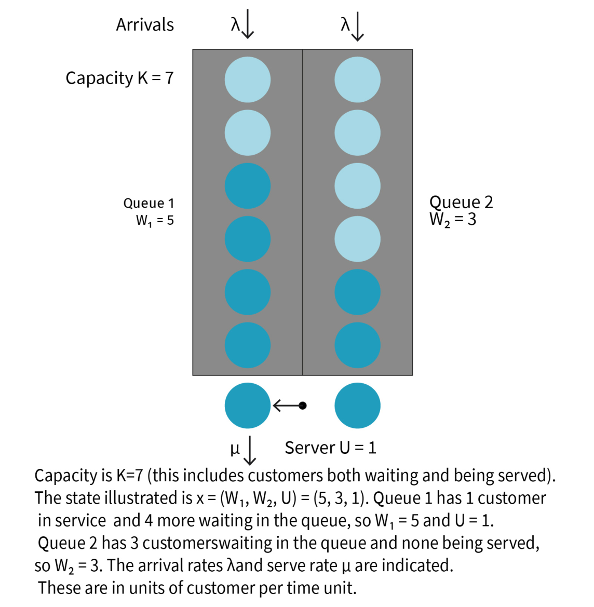
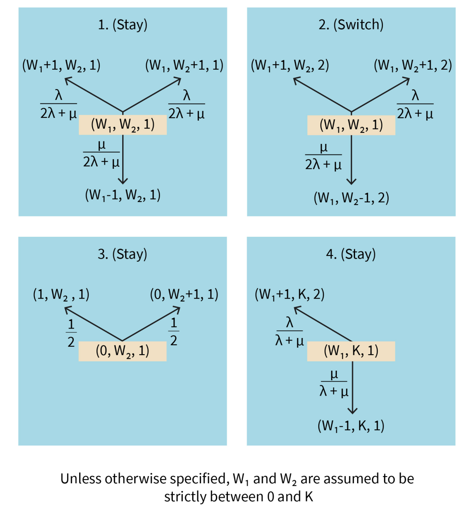
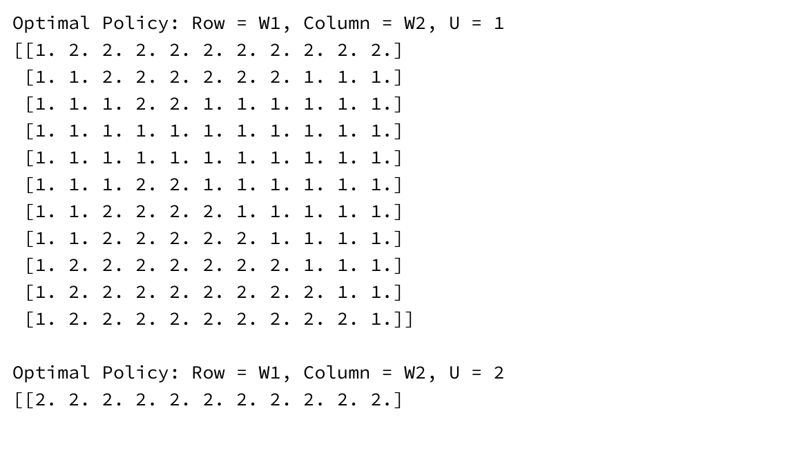
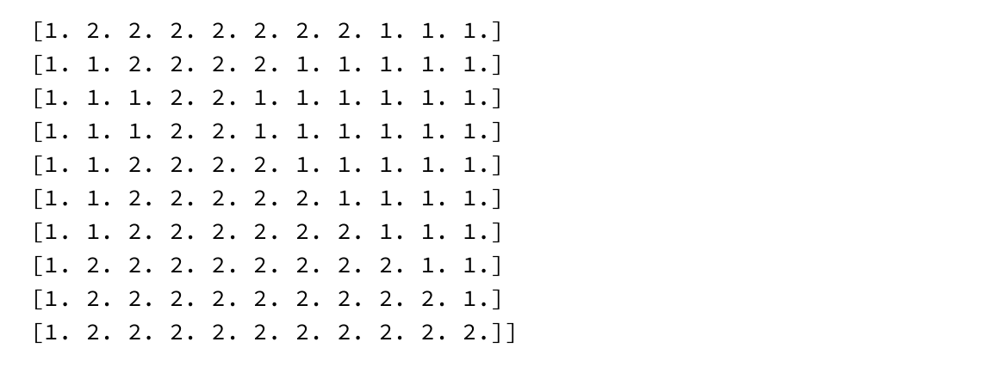
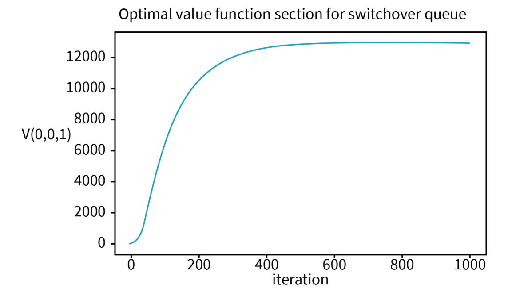

DLMAIRIL01 - Source-derived printable review sheet
Condensed from the same learning note. No additional teaching topics or official examination questions. Formulas and fonts render offline.
The queue example builds a cost-minimizing MDP at event epochs, derives transitions from exponential races, and uses value iteration to produce next-queue policy matrices with boundary-dependent, potentially nonmonotonic decisions.
Source caution: p. 212's explanatory inequality signs and ranges conflict with the matrices. The original matrices are retained; this summary does not invent corrected threshold ranges.
| Term | Meaning |
|---|---|
| Decision epoch | An event time when the server can choose Stay or Switch. |
| Queue state | Both customer counts and the server location. |
| Exponential race | The first event among independent exponential waiting times. |
| Expected stage length | Mean time until the next effective state transition. |
| Switching cost | A cost charged for changing the server's queue. |
| Next-queue policy | A stored queue number interpreted relative to current location. |
| Capacity boundary | A full queue cannot accept another customer. |
for the interior three-event case.
Arrays use (U-1,W1,W2); policy entries identify the next served queue.
The original queue diagram has state (5,3,1): five customers at queue 1 including the one being served, three at queue 2 and the server at queue 1. The implemented K=10 model evaluates both possible next-queue choices for every array entry and prints one policy matrix per current server position.
Study these with the detailed explanation in the linked Obsidian note.





Answer before expanding. Open the answers before printing to include them.
Both queue customer counts and the server's current queue.
A switching charge and queue-dependent cost over the expected stage duration.
Two times the arrival rate plus the service rate.
Divide that event's rate by the total effective event rate.
Empty queues cannot complete service and full queues cannot accept customers.
Two times (K+1) squared.
Server position, queue 1 count, queue 2 count.
The next queue number to serve, interpreted relative to the current server position.
Successors, transition probabilities, expected stage length and cost.
No; it selects a queue, while the value gives expected accumulated cost.
A selected value-function entry over the programmed sweeps.
Learning note: 06_worked_appendices/c_switchover_queue_control.
Course book pp. 201-213. Printed page + 2 = PDF viewer page. Personal-study use.